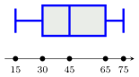
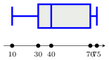

Équations-produits, évolutions et statistiques
QCM à réponse unique — choisis une proposition pour révéler la correction immédiatement.
Même QCM, sans correction — ton score apparaît une fois toutes les questions complétées.
Correction 1 :
On cherche le nombre $k$ tel que $ k \times 100=90 $.
On obtient $k=\dfrac{90}{100} = \dfrac{9}{10}=0{,}9$.
Correction 2 :
Le prix a diminué de $10$ euros, ce qui représente $10\ $% de $100$ euros.
Le coefficient multiplicateur associé à cette baisse est $0{,}9$.
On peut dire que le prix a été multiplié par $0{,}9$.
La bonne réponse est la réponse C.

La valeur $15$ correspond au minimum et la valeur $75$ au maximum.
Donc, la proportion de valeurs comprises entre $15$ et $75$ est de $100$%.
La bonne réponse est la réponse C.
On reconnaît une équation produit nul.
Un produit de facteurs est nul, si et seulement si l’un au moins de ses facteurs est nul.
$\begin{aligned} (4x+12)(4x+20)&=0\\\\ 4x+12=0 &\text{ ou } 4x+20=0\\\\ 4x=-12 &\text{ ou } 4x=-20\\\\ x=-3 &\text{ ou } x=-5 \end{aligned}$
Le produit de ces soltions est donc égal à : $(-3)\times (-5)=15$.
La bonne réponse est la réponse D.
$\begin{aligned} f\left(2\right)&=7-\dfrac{6}{5}(2-2)^2\\\\ &=7-\dfrac{6}{5}\times 0\\\\ &=7 \end{aligned}$
L’image de $2$ par la fonction $f$ est : $7$.
La bonne réponse est la réponse B.
La série triée dans l’ordre croissant est : $5$ ; $7$ ; $8$ ; $10$ ; $12$ ; $13$ ; $14$ ; $16$ ; $18$ ; $19$.
La série comporte $10$ valeurs, qui est un nombre pair, donc une médiane est une valeur strictement comprise entre les termes de rang $5$ et $6$, soit entre $12$ et $13$.
Prenons la moyenne de ces deux valeurs :
$\dfrac{12 + 13}{2} = 12{,}5$.
La médiane est donc $12{,}5$.
La bonne réponse est la réponse C.
On a :
$\begin{aligned} A&=\dfrac{5}{10\ 000}+\dfrac{5}{100}\\\\ &=0{,}000\ 5+0{,}05\\\\ &=0{,}050\ 5 \end{aligned}$
La bonne réponse est la réponse B.
